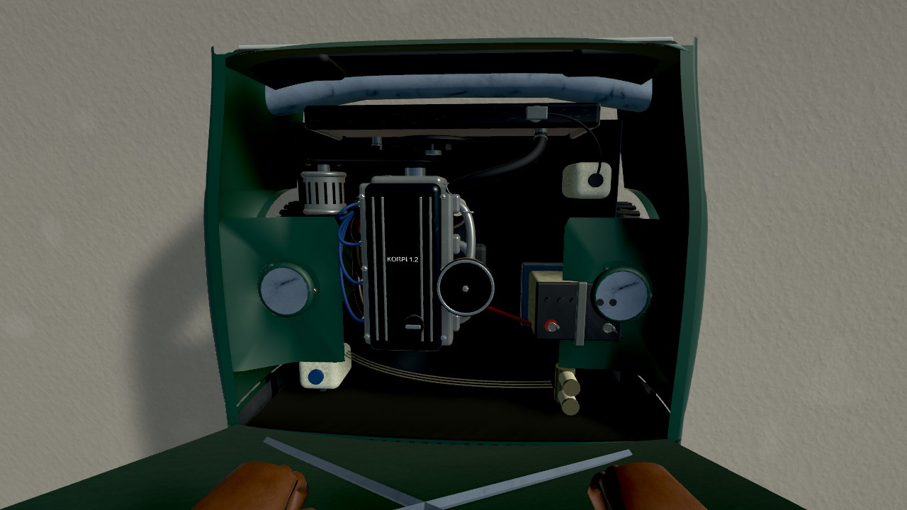
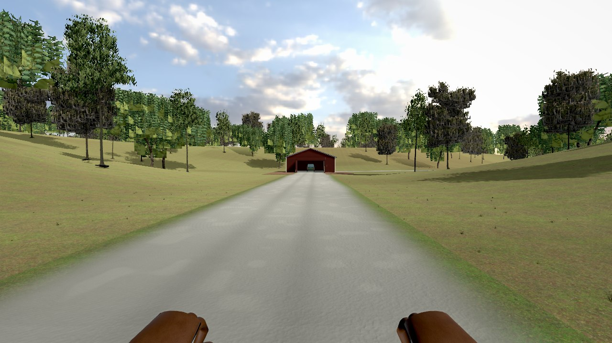
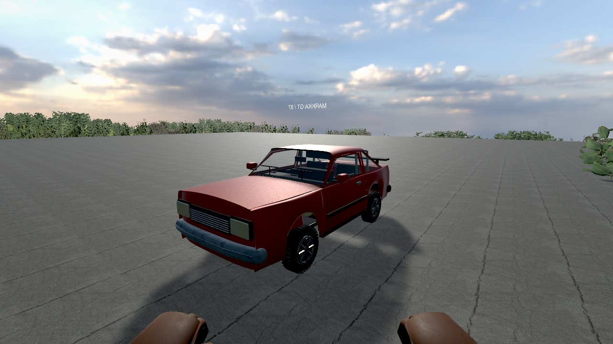

A FINNISH CAR REPAIR SIMULATOR
FINNISH
GARAGE
SIMULATOR.
An old car. Your own garage.
Always something to fix.
Finnish Garage Simulator is a car repair and driving game in development for Windows PC. Build your project car, investigate faults and take it onto Finnish country roads.
Windows PC · In development · No public demo

THE GAME
YOUR GARAGE.
YOUR NEXT PROJECT.
Hands-on repairs, driving and life in the Finnish countryside.
The game combines removable vehicle parts, bolts, tools and customer repair jobs. Part condition and installation affect the car. The fictional economy uses in-game CR credits.
Our goal is an open countryside with a story you can follow alongside your own projects. Esko’s inheritance, a neglected farm and an unfinished rally car form the campaign’s starting point. Summer and winter bring different road conditions and workshop chores, including firewood.
The mechanics, world, handling, graphics and character models are still being developed. Final content and system requirements are not confirmed.
DEVELOPMENT SCREENSHOTS / 26 OCTOBER 2026
A LOOK INSIDE
BUILD 0.20.
These are real game captures, not final artwork. They show the current prototype; there is no public demo or open test to download.




DEVELOPMENT STATUS / 26 OCTOBER 2026
STILL IN
THE WORKSHOP.
Build 0.20 updates the landscape, seasonal surfaces, sky, workshop objects and material finishes. Characters, trees and many vehicle and building details still need further art work.
Read the development update in Finnish →.
In development.
No public demo yet.
No public game download, demo or open test is currently available. Windows PC and Steam Early Access are the planned release direction. A release date, price and Steam store page have not been confirmed.
Contact the developer: nordhashoy@gmail.com. Contacting us does not reserve a testing place.